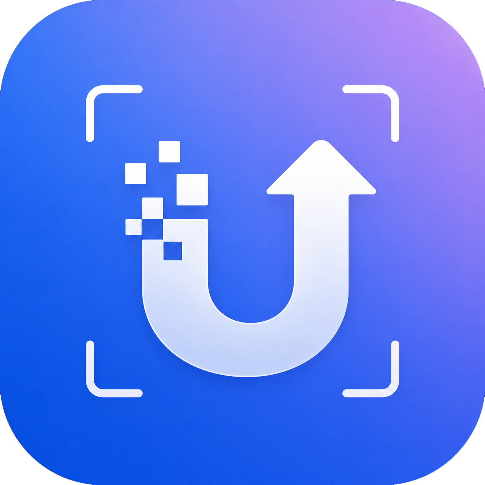

드래그 앤 드롭
PNG, JPG, TIFF, WEBP 파일을 큐에 올리고 여러 장을 자동으로 이어서 처리합니다.

UPSCAL 받기Real-ESRGAN 기반 로컬 업스케일러
UPSCAL은 사진과 그림을 내 PC에서 처리하는 Windows/macOS 데스크톱 앱입니다. 파이프라인, 비교 슬라이더, 출력 설정까지 한 화면에서 제어합니다.
Interactive Preview
이미지는 내 PC에서 처리되고, GPU가 감지되면 CUDA 가속을 활용합니다. 민감한 원본을 외부로 보내지 않고도 더 큰 결과를 만들 수 있습니다.
PNG, JPG, TIFF, WEBP 파일을 큐에 올리고 여러 장을 자동으로 이어서 처리합니다.
Real-ESRGAN 결과에 선명도와 질감 복원 단계를 더해 가장자리를 또렷하게 다듬습니다.
사진/그림 모델, 2x/4x 배율, DPI, 포맷, 타일 크기까지 한 곳에서 조절합니다.
Download
Windows 설치 파일과 macOS 앱 번들을 제공합니다. 사용하는 기기에 맞는 버튼을 누르면 GitHub 릴리즈 파일이 바로 내려받아집니다.